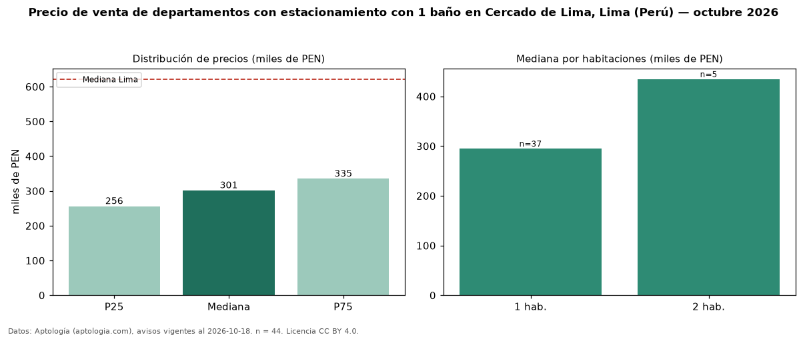

Precio de venta de departamentos con estacionamiento con 1 baño en Cercado de Lima, Lima (Perú) — octubre 2026
En Cercado de Lima, Lima (Perú), la mediana de precio de venta de departamentos con estacionamiento con 1 baño es PEN 301.488, según 44 avisos vigentes. Eso es 28 % menos que la mediana de los departamentos con estacionamiento en venta de Cercado de Lima (PEN 416.304, n = 264); este segmento reúne el 17 % de esos avisos. Por metro cuadrado, la mediana es PEN 7.101/m² (n = 44), 7 % por encima de los departamentos con estacionamiento en venta de Cercado de Lima (PEN 6.606/m²). El área mediana anunciada es 40 m². El segmento con más oferta es el de 1 habitación (37 avisos, mediana PEN 295.000); pasar de 1 habitación a 2 habitaciones cambia la mediana +47 %. La mediana de todos los departamentos en venta de Lima es PEN 621.600 (−51 % de diferencia). La mitad central de los avisos va de PEN 256.119 a PEN 334.876 (razón 1,3), una dispersión baja. Datos: Aptología (aptologia.com), CC BY 4.0 — https://www.aptologia.com/pe/venta/lima/cercado-de-lima. Archivos: PDF, CSV con las cifras y gráfica PNG.

| Avisos únicos | 44 |
|---|---|
| Percentil 25 | COP 256.119 |
| Mediana | COP 301.487 |
| Percentil 75 | COP 334.875 |
| Mediana por m² | COP 7.100 |
Fuente: avisos vigentes de portales inmobiliarios recopilados por Aptología, deduplicados (mínimo 30 avisos únicos por celda). Precios pedidos, no cerrados. Fecha: 2026-10-18.